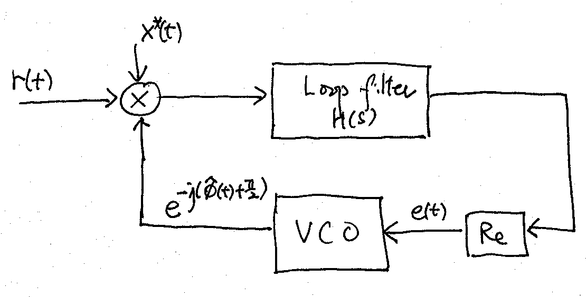

9.3. Decision-directed Phase-locked Loop#
For continuous transmission or long packets, the carrier frequency offset may vary. As a result, we need to track changes on \(\omega_o\) and \(\theta\).
Let \(\phi(t) \triangleq \omega_o t + \theta\) be the phase function that incorporates both the carrier frequency and phase offsets. Rewrite the joint ML estimation of \((\omega_o, \theta)\) in terms of tracking \(\phi(t)\). Setting the derivative of the decision statistic in (9.1) w.r.t. \(\phi(t)\) to \(0\) gives the following necessary condition for the ML estimator \(\hat\phi(t)\):
(9.5)#\[\begin{equation} \text{Re} \left\{ -j \int_{-\infty}^{\infty} r(t) x^*(t) e^{-j\hat \phi(t)} dt \right\} = 0. \end{equation}\]We may use the following PLL to solve for \(\hat\phi(t)\) in (9.5):
The integration in (9.5) is implemented by the loop filter shown in the PLL above. The loop filter is a narrow-bandwidth lowpass filter with transfer function \(H(s)\).
The voltage-controlled oscillator (VCO) generates the LO carrier \(e^{-j \left(\hat\phi(t) + \frac{\pi}{2} \right)}\). The instantaneous frequency of the VCO is \(\frac{d \hat\phi(t)}{dt} = c e(t)\) where \(c\) is a constant and \(e(t)\) is the input to the VCO. In the Laplace domain, we have \(s\hat\Phi(s) = c E(s)\), where the upper-case symbols are the Laplace transforms of the signals denoted by the corresponding lower-case symbols.
To investigate the operation of the PLL and the proper choice of \(H(s)\), let us ignore the presence of the AWGN and assume \(r(t) = x(t) e^{j\phi(t)}\). Under this assumption, the input signal of the loop filter is thus \(|x(t)|^2 e^{j \left( \phi_e(t) - \frac{\pi}{2} \right)}\), where \(\phi_e (t) \triangleq \phi(t) - \hat\phi(t)\) is the phase error signal.
Suppose that the bandwidth of the phase error signal \(\phi_e(t)\) is much smaller than that of \(x(t)\) and that the loop filter is to have a bandwidth similar to that of \(\phi_e(t)\). Then the output of the loop filter is approximately \(A_x h(t) * e^{j \left( \phi_e(t) - \frac{\pi}{2} \right)}\), where \(A_x = \int_{-\infty}^{\infty} |x(t)|^2 dt\) is the dc component of \(|x(t)|^2\). Let’s restrict the impulse response \(h(t)\) of the loop filter to be real-valued, and assume that \(|\phi_e(t)|\) is small. Hence the input signal applied to the VCO is
(9.6)#\[\begin{equation} e(t) \approx A_x h(t) * \sin \phi_e(t) \approx A_x h(t) * \phi_e(t) \end{equation}\]where the second approximation, which linearizes the problem, results from the fact that \(\sin x \approx x\) if \(|x| \ll 1\). In the Laplace domain, (9.6) becomes \(E(s) = A_x H(s) \Phi_e(s)\).
Putting \(E(s) = A_x H(s) \Phi_e(s)\) and \(\hat\Phi(s) = \Phi(s) - \Phi_e(s)\) into \(s\hat\Phi(s) = c E(s)\), we obtain
(9.7)#\[\begin{equation} s\hat{\Phi}(s) = cA_xH(s) \Phi_e(s), \end{equation}\]or equivalently
(9.8)#\[\begin{equation} \Phi_e(s) = \frac{s \Phi(s)}{s+cA_xH(s)} = \frac{\frac{\omega_o}{s} + \theta}{s+cA_xH(s)} . \end{equation}\]First-order loop: Select \(H(s) = 1\) in the passband. Applying the final value theorem to (9.8), we get
\[\begin{equation*} \lim_{t \rightarrow \infty} \phi_e(t) = \lim_{s \rightarrow 0} s\Phi_e(s) = \frac{\omega_o}{cA_x}. \end{equation*}\]Thus, the PLL is able to track the carrier frequency offset but has a phase error of \(\frac{\omega_o}{cA_x}\) at steady state after it settles.
Second-order loop: Select \(H(s) = 1+ \frac{a}{s}\) in the passband. Applying the final value theorem to (9.8), we get
\[\begin{equation*} \lim_{t \rightarrow \infty} \phi_e(t) = \lim_{s \rightarrow 0} s\Phi_e(s) = 0. \end{equation*}\]Thus, the PLL is able to track the both carrier frequency and phase offsets at steady state.
{kind=link}
9.3.1. USRP implementation#
Multiplying both sides of (9.7) by \(s\) and employing the second-order loop \(H(s)\), we get the following time-domain differential equation equivalent to (9.7):
(9.9)#\[\begin{equation} \frac{d}{dt} \left(\frac{d\hat\phi(t)}{dt} \right) = cA_x \frac{d\phi_e(t)}{dt} + caA_x \phi_e(t) \end{equation}\]in the passband of \(H(s)\).
If the signals are sampled at the symbol rate \(\frac{1}{T}\) and derivatives are approximated by the corresponding differences, we can solve (9.9) by the following iterative algorithm in discrete time:
(9.10)#\[\begin{split}\begin{align} \phi[n] &= \angle ( \hat r[n]) \\ \phi_e[n] &= \phi[n] - \hat\phi[n] \\ \dot\phi[n] &= \dot\phi[n-1] + \mu ( \phi_e[n] - \phi_e[n-1]) + \nu \phi_e[n] \\ \hat\phi[n+1] &= \hat \phi[n] + \dot\phi[n] \end{align}\end{split}\]where \(\mu\) and \(\nu\) are small positive constants chosen to implement the narrowband lowpass property of \(H(s)\). Note that \(\phi[n] = \angle ( \hat r[n])\) is the angle of the (decision-) pilot-corrected MF output sampled at the symbol rate.
Note that the iterative algorithm in (9.10) is unstable. We may add the stabilizing constant \(\lambda\) (slightly smaller than 1) to the algorithm as below:
(9.11)#\[\begin{split}\begin{align} \phi[n] &= \angle ( \hat r[n]) \\ \phi_e[n] &= \phi[n] - \hat\phi[n] \\ \dot\phi[n] &= \lambda \dot\phi[n-1] + \mu ( \phi_e[n] - \phi_e[n-1]) + \nu \phi_e[n] \\ \hat\phi[n+1] &= \lambda \hat \phi[n] + \dot\phi[n]. \end{align}\end{split}\]Or we may limit the range of \(\dot\phi[n]\) in (9.10) to the maximum range of possible (normalized) frequency offset by noting that \(\dot\phi[n] = T \frac{d\hat\phi(t)}{dt} \big|_{t=nT}\).
After the PL settles, we may correct the frequency and phase offsets by multiplying the MF output \(\tilde r[n]\) with \(e^{-j\hat\phi[n]}\).